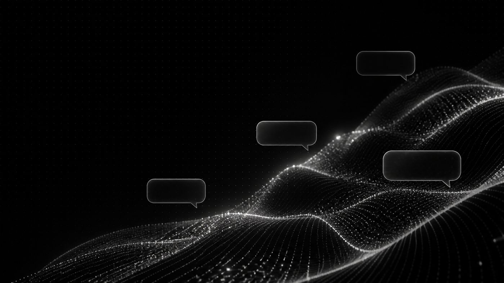

Fragen beantworten
Öffnungszeiten, Einsatzgebiet, Ablauf, Preisrahmen – zuverlässig aus deinen eigenen Angaben.
Ein Assistent auf deiner Website, der deine Angebote, Preise und Öffnungszeiten kennt. Er beantwortet Routinefragen, nimmt Anliegen auf und leitet sie sortiert weiter.
Antwortet aus deinem Wissen Monatlich kündbar Auch auf fremden Seiten

KI ersetzt keine Beratung. Sie nimmt dir die Fragen ab, die du ohnehin jede Woche mehrfach gleich beantwortest.
Öffnungszeiten, Einsatzgebiet, Ablauf, Preisrahmen – zuverlässig aus deinen eigenen Angaben.
Anliegen, Termin und Kontaktdaten landen sortiert in deinem Postfach, auch nachts.
Eingehende Texte werden zusammengefasst, zugeordnet und für die Bearbeitung vorbereitet.
In einer eigenen WebApp erfasst der Assistent Einträge auf Zuruf – im Rahmen deiner Rechte.
Bevor der Assistent live geht, weisst du, was er sagt – und wo er bewusst schweigt und übergibt.
Wir übernehmen deine Inhalte, Preise und Abläufe. Du musst nichts aufbereiten.
Wir legen fest, was er beantwortet und wann er an einen Menschen übergibt.
Du probierst ihn aus und sagst, was er anders formulieren soll.
Der Einbau erfolgt geprüft; neue Preise und Angebote pflegen wir laufend nach.
Ein KI-Assistent ist nur brauchbar, wenn man ihm glauben kann. Darum bauen wir die Grenzen vor der Funktion.
Der Assistent lässt sich in jede bestehende Website einbauen – sie muss nicht von uns sein. Monatlich kündbar, ohne Jahresvertrag.
Nicht jede Aufgabe braucht ein Sprachmodell. Wir trennen beides bewusst.
Wenn Eingang, Prüfung und Ergebnis klar definiert sind, ist ein Automatisierungssystem günstiger und kontrollierbarer.
KI kann Texte verstehen, einordnen und formulieren. Genau dort, wo starre Regeln nicht ausreichen, ist sie die richtige Wahl.
Du gehst kein Risiko ein: Der Assistent startet mit einem klar abgegrenzten Wissensbereich.
Er ist darauf ausgelegt, aus deinem hinterlegten Wissen zu antworten und bei fehlenden Informationen offen weiterzuleiten statt zu raten. Vor dem Start prüfst du das an echten Fragen.
Ja. Der Assistent lässt sich in jede Website einbauen, auch wenn sie nicht von uns stammt.
Anfragen und Gespräche gehören dir und werden nicht weiterverkauft. Was gespeichert wird und wie lange, halten wir vor dem Start schriftlich fest.
Nein. Der Assistent läuft monatlich und ist monatlich kündbar. Bringt er dir nichts, hörst du einfach auf.
Sag uns, was bei dir am häufigsten hereinkommt. Wir sagen ehrlich, ob ein Assistent das sinnvoll abnehmen kann.